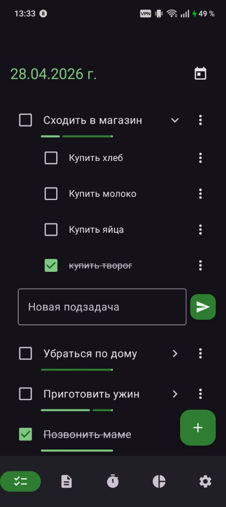
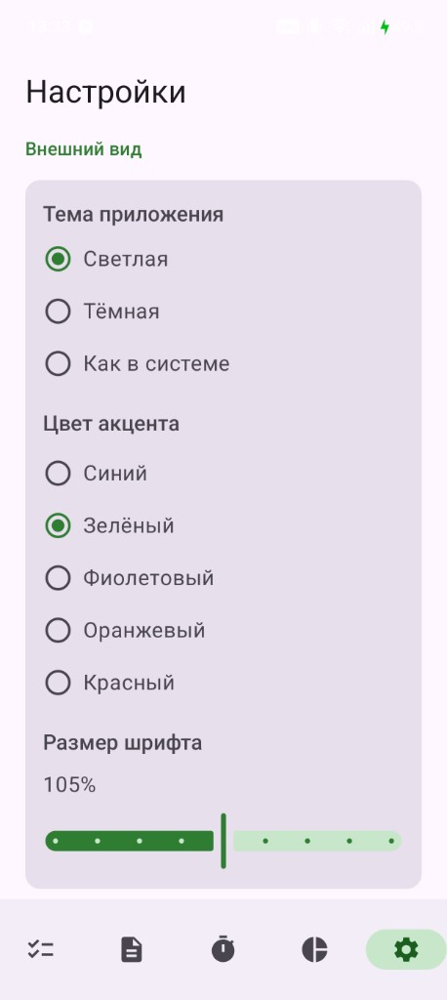
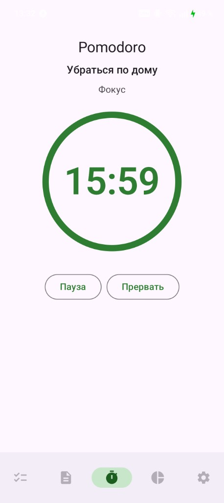
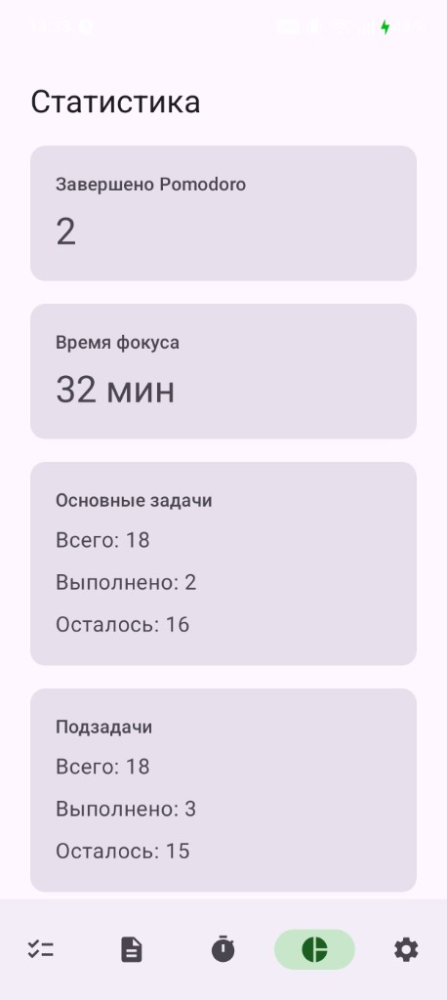
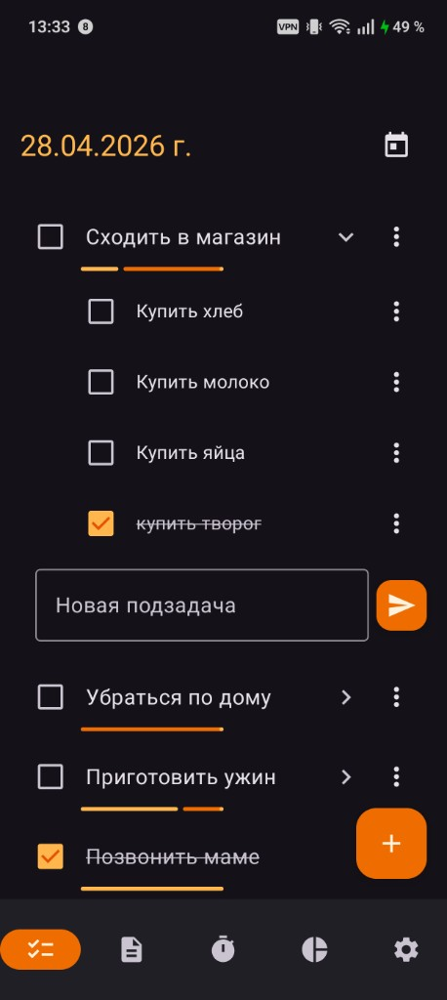
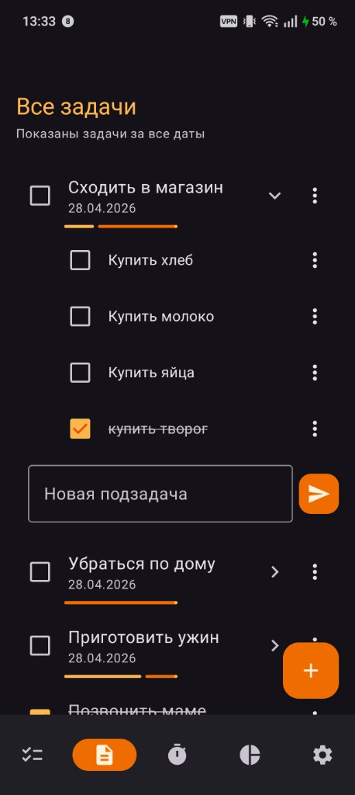
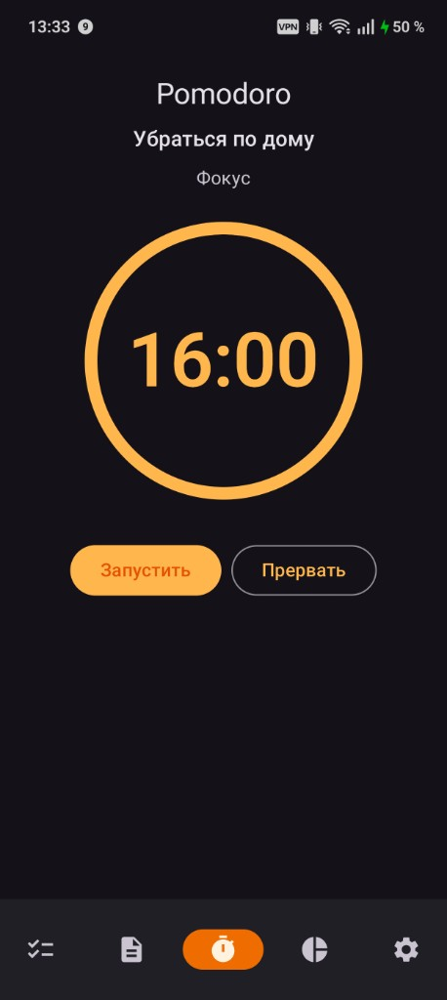
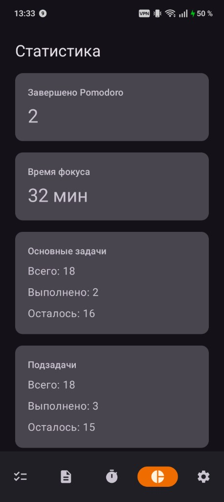
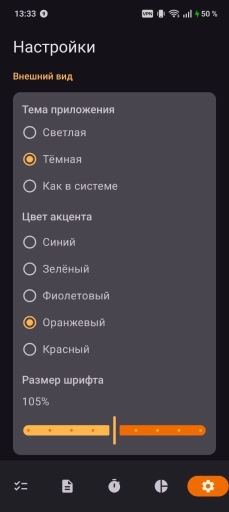

Фокус · задачи · прогресс
PomodoroApp — задачи, фокус и порядок в одном приложении
Удобное приложение для задач, подзадач, Pomodoro и контроля прогресса на каждый день.
Скачать приложениеВсё нужное для продуктивной работы
PomodoroApp помогает планировать день, разбивать дела на подзадачи, запускать Pomodoro для конкретной задачи и видеть свой прогресс.
Приложение сделано просто и понятно: без лишнего шума, с удобной логикой работы и акцентом на фокус.
Интерфейс приложения
Экраны PomodoroApp: задачи по дням и общий список, таймер Pomodoro, статистика и настройки внешнего вида — в светлой и тёмной темах, с разными акцентными цветами.









Основные возможности
- задачи и подзадачи
- экран задач по дням
- общий список всех задач
- Pomodoro-таймер
- статистика
- drag-and-drop
- скрытие выполненных задач
- настройки интерфейса
Просто в использовании
Добавь задачи → распредели по дням → запусти Pomodoro → отмечай выполненное и смотри статистику
Начни работать спокойнее и продуктивнее
Скачай PomodoroApp и собери задачи, фокус и прогресс в одном месте.
Скачать приложение